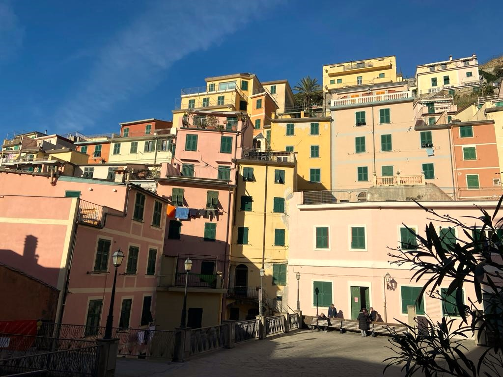
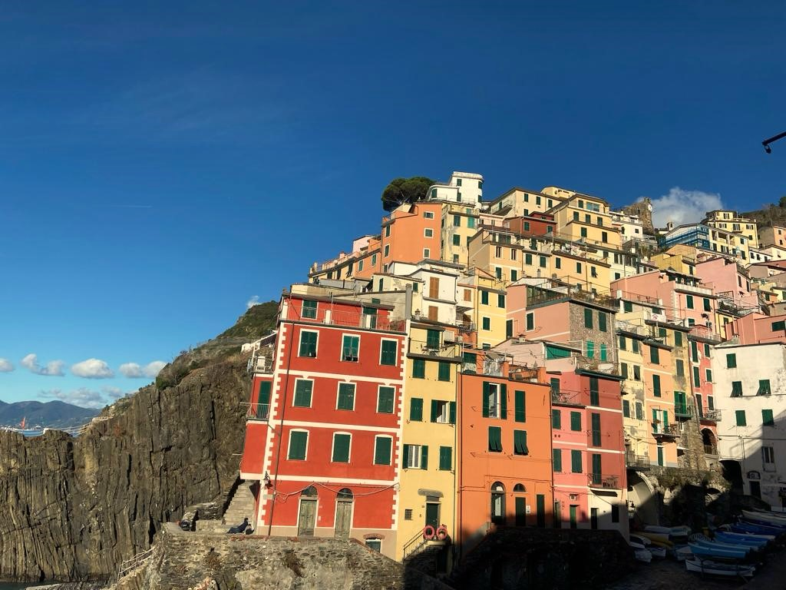

Riomaggiore is the southern jewel of Cinque Terre, renowned for its stunning landscapes and traditional charm. Perched along the Ligurian coastline, Riomaggiore is characterized by colorful houses clinging to steep cliffs that overlook the azure waters of the Mediterranean Sea. Its geography is defined by rugged terrain, with terraced vineyards and olive groves dotting the hillsides. The village itself is divided into two main parts: the old town, with its narrow, winding streets, and the harbor area, where fishing boats bob in the water against a backdrop of charming waterfront restaurants and cafes. Riomaggiore boasts a small pebble beach, providing a serene spot for relaxation amid the natural beauty. This region is part of Cinque Terre National Park, a UNESCO World Heritage Site, and its geography invites outdoor enthusiasts to explore its hiking trails, offering breathtaking panoramic views of the coastline. Riomaggiore's unique geography, a blend of rugged cliffs, vineyard-covered slopes, and the mesmerizing sea, makes it a magnet for visitors seeking both natural beauty and a taste of authentic Italian coastal life.


Geography